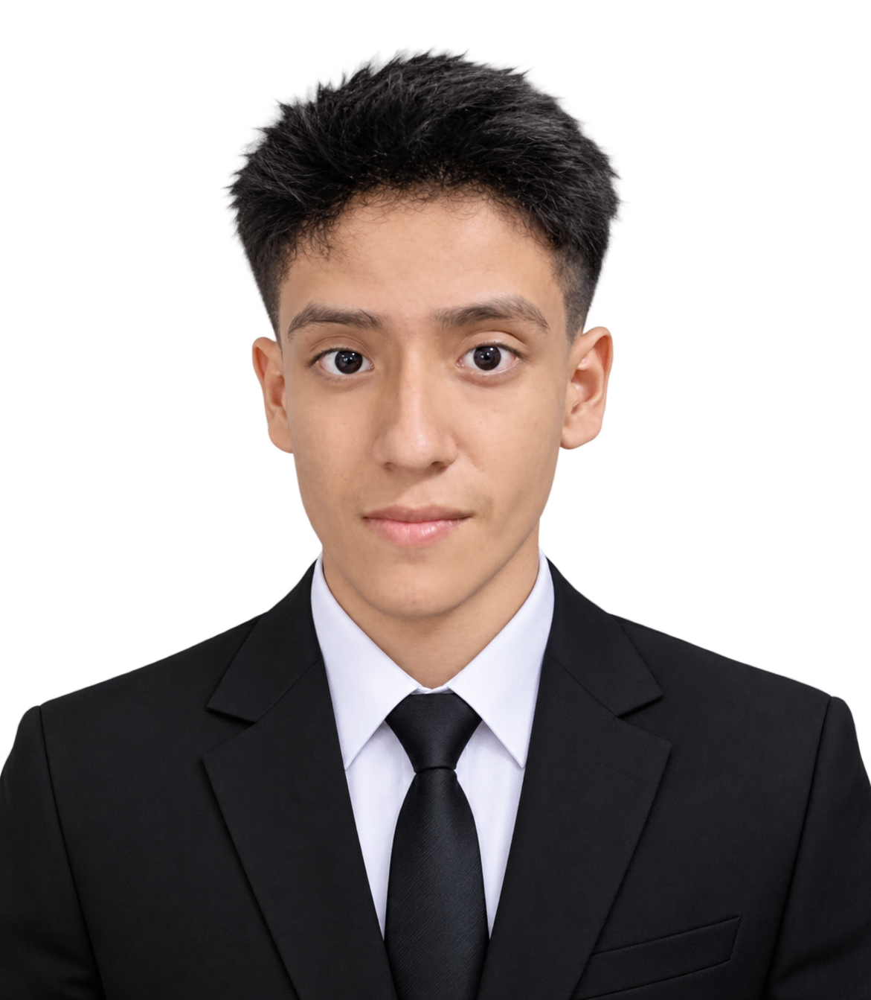

Soy Alejandro Ovando, estudiante de Ingeniería en Sistemas. Me interesa explorar la tecnología, aprender haciendo y convertir ideas en proyectos.
Ver proyectos ↗ Conocer mi perfil →
SEÑOR ALEJANDROEste portafolio reúne mi formación, mis intereses y los trabajos que voy desarrollando durante mi etapa universitaria.
Más sobre mí ↗Un proyecto académico que combina Arduino, sensores y automatización para controlar la entrega de alimento.
Explorar el proyecto ↗